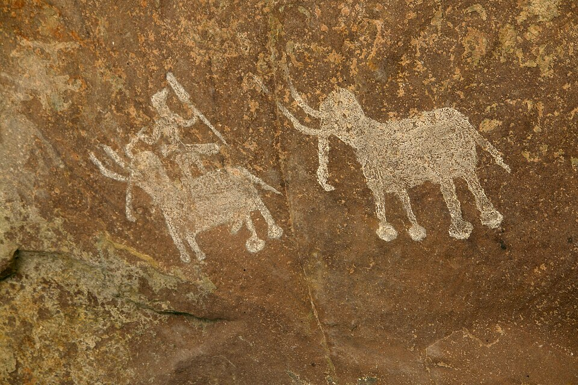
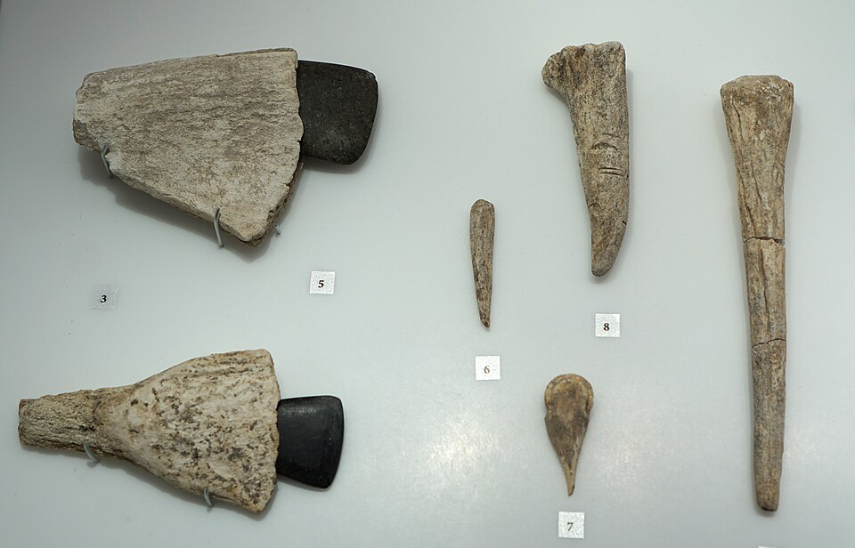

EXAM TIPCell Biology (high-yield Tier A): Cell discovered by Robert Hooke (1665). Cell Theory: Schleiden (1838, plants) + Schwann (1839, animals) + Virchow (1855, omnis cellula e cellula). Key organelles: Nucleus (control center), Mitochondria (powerhouse, ATP), Ribosomes (protein factory), Chloroplasts (photosynthesis), Lysosomes (suicide bags), Golgi (packaging), ER (rough=protein, smooth=lipid). Prokaryotic (no nucleus, bacteria) vs Eukaryotic (nucleus, plants/animals). Cell wall = cellulose (plants), chitin (fungi), peptidoglycan (bacteria). Mitosis: 2 identical diploid cells (PMAT). Meiosis: 4 haploid gametes (crossing over in Prophase I). RBCs have NO nucleus.

The cell is the basic structural and functional unit of all living organisms. Discovered by Robert Hooke (1665), the cell contains specialized organelles — each performing specific functions. Understanding cell structure and division is fundamental to biology and appears frequently in BPSC prelims.

Cell division: Mitosis (produces 2 identical diploid daughter cells for growth and repair) and Meiosis (produces 4 haploid gametes for sexual reproduction, with crossing over in Prophase I for genetic variation). The cell cycle: Interphase (G1→S→G2) → M phase (mitosis + cytokinesis).
Rajendra Agricultural University (RAU, Pusa, Samastipur, Bihar): one of Bihar's oldest agricultural universities (established 1905 as Imperial Agricultural Research Institute, now Dr. Rajendra Prasad Central Agricultural University). Research on plant cell biology, tissue culture, and crop improvement — contributing to Bihar's agriculture. Plant cell structure and photosynthesis studies are conducted here.
Bihar Animal Sciences University (BASU, Patna): established 2017 — focuses on veterinary and animal sciences. Research on animal cell biology, genetics, and reproduction. Cell division (mitosis/meiosis) studies are central to animal breeding and genetics programmes at BASU.
Patna University — Department of Botany & Zoology: Patna University (established 1917, Bihar's first university) has departments of Botany and Zoology that conduct cell biology research and teaching. Studies on cell structure, genetics, and tissue culture relevant to Bihar's flora and fauna.
ICAR Research Institutes in Bihar: ICAR-Research Complex for Eastern Region (Patna) conducts research on crop cell biology, tissue culture, and genetic improvement of crops suited to Bihar's climate (rice, maize, wheat, lentils, makhana). Cell-level research directly benefits Bihar's farmers.
Makhana (Euryale ferox) — Bihar's unique crop: Makhana (fox nut) is a unique aquatic crop grown in Bihar (especially Mithila region). It has received a GI tag. Research on makhana's cellular structure, genetics, and cultivation is conducted at Bihar's agricultural institutes. Bihar produces ~85% of India's makhana — making cell biology research on this crop especially relevant for BPSC.
Medical colleges and cell research: Bihar's medical colleges (PMCH Patna, IGIMS Patna, AIIMS Patna) conduct research on human cell biology — including cancer cell division (mitosis gone wrong), blood cell disorders (sickle cell anaemia common in Bihar), and genetic diseases. Understanding cell division is fundamental to cancer treatment — a growing health concern in Bihar.
🔗 Cross-Topic Connections
Topic 70 (Human Body Systems): Cells are the building blocks of all body systems. Muscle cells form muscles, nerve cells (neurons) form the nervous system, and blood cells (RBCs, WBCs, platelets) circulate in the cardiovascular system. Understanding cell structure is essential for understanding how body systems work.
Topic 74 (Genetics Basics): DNA (in the nucleus) carries genetic information. Meiosis (cell division) produces gametes (sperm and egg) with half the chromosomes — and crossing over in Prophase I creates genetic variation. Mendel's laws of heredity depend on meiosis. Cell division is the physical basis of genetics.
Topic 75 (Plant Physiology): Chloroplasts (plant cell organelles) are the site of photosynthesis. Plant cell walls (cellulose) provide structural support. Vacuoles maintain turgor pressure. Understanding plant cell structure is essential for understanding plant physiology.
📰 Current Relevance
Cancer research: cancer is essentially uncontrolled mitosis — cells divide without stopping, forming tumours. Understanding cell division and the cell cycle is fundamental to cancer treatment. Chemotherapy targets rapidly dividing cells. Bihar's medical colleges (AIIMS Patna, IGIMS) are expanding cancer research and treatment.
Stem cell research: stem cells are undifferentiated cells that can divide (mitosis) and differentiate into various cell types. Stem cell therapy holds promise for treating spinal cord injuries, diabetes, and Parkinson's disease. India has guidelines for stem cell research (ICMR, 2017).
CRISPR-Cas9 gene editing: the discovery of CRISPR (2020 Nobel Chemistry Prize — Charpentier and Doudna) allows precise editing of DNA inside cells. This technology has applications in agriculture (disease-resistant crops), medicine (treating genetic diseases), and biotechnology.
COVID-19 and viruses: viruses are not true cells (they lack cell structure) — but they replicate inside host cells by hijacking the cell's machinery. Understanding cell structure (ribosomes, ER, Golgi) helps understand how viruses like SARS-CoV-2 replicate and how vaccines work.
Cell-cultured meat: lab-grown meat (cultured from animal cells in bioreactors) is an emerging technology — approved in the US (2023) and Singapore. It could reduce the environmental impact of meat production. India is exploring this technology.
Makhana research (Bihar): Bihar's makhana (GI-tagged) is being studied at the cellular level for genetic improvement, disease resistance, and higher yields. The National Research Centre for Makhana (Darbhanga, Bihar) conducts cell and tissue culture research on this unique crop.
✍️ MCQ Practice Set — 25 Questions (BPSC Level)
Test your knowledge. Select the best answer for each question, then click "Check Answers" to see your score and explanations.
Your Score: 0/25
Q1. Who discovered the cell in 1665?
✅ Correct Answer: (D) — Robert Hooke discovered the cell in 1665 by observing thin slices of cork under a primitive compound microscope. The cork's structure reminded him of monastery rooms ('cells'). Described in his book 'Micrographia' (1665). What he saw were dead cell walls of plant tissue.
Q2. Who was the first to observe living cells (microorganisms) under a microscope?
✅ Correct Answer: (C) — Leeuwenhoek (1632-1723) was the first to observe living cells (1670s) using a powerful single-lens microscope (~300x). He observed bacteria ('animalcules'), protozoa, sperm cells, and blood cells. Called the 'Father of Microbiology.' Reported findings to the Royal Society of London.
Q3. The Cell Theory was proposed by which scientists?
✅ Correct Answer: (D) — Schleiden (1838, all plants made of cells) + Schwann (1839, all animals made of cells) + Virchow (1855, omnis cellula e cellula). Three principles: (1) all organisms are made of cells, (2) cell is the basic unit of life, (3) all cells arise from pre-existing cells.
Q4. Which of the following is NOT a principle of the Cell Theory?
✅ Correct Answer: (C) — 'All cells contain a nucleus' is NOT a principle of Cell Theory. Prokaryotic cells (bacteria, archaea) do NOT have a nucleus. The three principles are: (1) all organisms are made of cells, (2) cell is the basic unit, (3) all cells arise from pre-existing cells.
Q5. The powerhouse of the cell (site of ATP production via cellular respiration) is:
✅ Correct Answer: (D) — Mitochondria = 'powerhouse of the cell.' They produce ATP (energy currency) via aerobic respiration (Krebs cycle + electron transport chain). Double membrane with cristae (inner folds). Contain their own DNA (mtDNA) — supporting the endosymbiotic theory (Lynn Margulis).
Q6. Which organelle is the 'site of photosynthesis' in plant cells?
✅ Correct Answer: (D) — Chloroplasts are the site of photosynthesis in plant cells. Contain chlorophyll (green pigment). Photosynthesis: CO₂ + H₂O + light → glucose + O₂. Double membrane, thylakoids (stacked into grana). Own DNA — supports endosymbiotic theory. Found only in plant cells and some protists (algae).
Q7. The 'control center' of the cell, containing genetic material (DNA), is:
✅ Correct Answer: (C) — The nucleus is the 'control center' of the cell. Contains DNA (chromosomes). Controls growth, metabolism, protein synthesis, and reproduction. Surrounded by nuclear membrane (double membrane with pores). Contains nucleolus (ribosome assembly). Absent in mature RBCs and sieve tube cells.
Q8. Ribosomes are the site of which cellular process?
✅ Correct Answer: (C) — Ribosomes = site of protein synthesis (translation). Read mRNA and assemble amino acids into proteins. Found in ALL cells (prokaryotic and eukaryotic). Made of rRNA + proteins. 70S in prokaryotes, 80S in eukaryotes. Can be free or attached to rough ER.
Q9. The endoplasmic reticulum (ER) exists in two forms. What is the function of the rough ER?
✅ Correct Answer: (A) — Rough ER (RER) has ribosomes attached — 'rough' appearance. Involved in protein synthesis and transport. Proteins go from RER to Golgi for packaging. Smooth ER (SER) has no ribosomes — lipid synthesis, detoxification, calcium storage.
Q10. The Golgi apparatus (Golgi body) is responsible for:
✅ Correct Answer: (C) — Golgi apparatus = cell's 'packaging center' / 'post office.' Receives proteins/lipids from ER, modifies them (glycosylation), packages into vesicles, secretes to destination. Also produces lysosomes. Discovered by Camillo Golgi (1898). Stack of flattened cisternae.
Q11. Lysosomes are called the 'suicide bags' of the cell because:
✅ Correct Answer: (D) — Lysosomes = 'suicide bags' / 'digestive bags.' Contain hydrolytic enzymes that break down waste, damaged organelles, and the cell itself (autolysis — programmed cell death). Produced by Golgi. Found mainly in animal cells. Discovered by Christian de Duve (1955).
Q12. Which cell organelle is known as the 'protein factory' of the cell?
✅ Correct Answer: (D) — Ribosomes = 'protein factory.' They assemble proteins from amino acids by reading mRNA. 70S (prokaryotes: 30S+50S), 80S (eukaryotes: 40S+60S). 'S' = Svedberg units (sedimentation rate). A cell can have millions of ribosomes.
Q13. The cell wall in plant cells is primarily composed of which substance?
✅ Correct Answer: (C) — Plant cell wall = cellulose (polysaccharide of β-glucose). Most abundant organic polymer on Earth. Provides rigidity. Fungal cell walls = chitin. Bacterial cell walls = peptidoglycan. Animal cells have NO cell wall (only plasma membrane).
Q14. The plasma membrane (cell membrane) is composed of which type of molecule?
Q15. Which structure is found in plant cells but NOT in animal cells?
✅ Correct Answer: (A) — Plant cells have cell wall (cellulose) and chloroplasts (photosynthesis) — animal cells lack both. Plant cells also have a large central vacuole. Animal cells have centrioles and lysosomes (rare in plants). Both have nucleus, mitochondria, ribosomes, ER, Golgi, plasma membrane.
Q16. Which type of cell division produces two identical daughter cells with the same number of chromosomes as the parent cell?
✅ Correct Answer: (B) — Mitosis: 2 identical diploid daughter cells (2n → 2n). Occurs in somatic (body) cells for growth, repair, and replacement. Phases: PMAT (Prophase → Metaphase → Anaphase → Telophase). DNA replicates during interphase (S phase) before mitosis begins.
Q17. Meiosis results in how many daughter cells, and with what chromosome number?
✅ Correct Answer: (D) — Meiosis: 4 haploid (n) daughter cells from one diploid (2n) parent. Two divisions: Meiosis I (reductional, homologous chromosomes separate) + Meiosis II (equational, sister chromatids separate). Occurs in germ cells → gametes (sperm/egg). Halving ensures zygote gets correct 2n number.
Q18. The correct order of phases in mitosis is:
✅ Correct Answer: (C) — PMAT: Prophase (chromosomes condense, nuclear membrane dissolves) → Metaphase (chromosomes align at equator) → Anaphase (sister chromatids separate to poles) → Telophase (nuclear membrane reforms). Cytokinesis follows. Mnemonic: 'Pour Me Another Tea.'
Q19. Crossing over (exchange of genetic material between homologous chromosomes) occurs during which phase of meiosis?
✅ Correct Answer: (D) — Crossing over occurs in Prophase I (pachytene sub-stage). Homologous chromosomes pair (synapsis) and exchange DNA at chiasmata. Creates new gene combinations — basis of genetic variation. Why siblings look different. Prophase I has 5 sub-stages: leptotene → zygotene → pachytene → diplotene → diakinesis.
Q20. The difference between prokaryotic and eukaryotic cells is that prokaryotic cells:
✅ Correct Answer: (A) — Prokaryotic cells (bacteria, archaea) lack a true nucleus (DNA in nucleoid region) and membrane-bound organelles. Have: 70S ribosomes, cell wall (peptidoglycan), plasma membrane. Eukaryotic cells (plants, animals, fungi, protists) have true nucleus + membrane-bound organelles (mitochondria, ER, Golgi, etc.) + 80S ribosomes.
Q21. The largest organelle in a typical animal cell is:
✅ Correct Answer: (A) — The nucleus is the largest organelle in animal cells (~5-10 μm). Visible under a light microscope. Contains DNA + nucleolus. In plant cells, the largest organelle is the central vacuole (up to 90% of cell volume).
Q22. In which phase of the cell cycle does DNA replication occur?
✅ Correct Answer: (A) — DNA replication occurs in S phase (Synthesis) of interphase. Cell cycle: Interphase (G1→S→G2) + M phase (mitosis + cytokinesis). G1 = growth, S = DNA replication, G2 = preparation for division, M = actual division. The cell spends ~90% of its cycle in interphase.
Q23. Vacuoles in plant cells serve which primary function?
✅ Correct Answer: (D) — Plant vacuoles store water, nutrients, and waste. Central vacuole can occupy 90% of plant cell volume. Maintains turgor pressure (water against cell wall) — keeps plant firm. When a plant wilts, vacuoles have lost water and turgor pressure decreased. Animal cells have small/absent vacuoles.
Q24. The endosymbiotic theory explains the origin of which organelles?
✅ Correct Answer: (C) — Endosymbiotic theory (Lynn Margulis, 1967): mitochondria and chloroplasts were once free-living bacteria engulfed by a host cell. Evidence: both have own circular DNA, double membranes, reproduce independently (binary fission), and have 70S ribosomes (like bacteria). They formed a symbiotic relationship with the host.
Q25. Which human cells do NOT have a nucleus?
✅ Correct Answer: (B) — Mature RBCs (erythrocytes) do NOT have a nucleus — they expel it during development to make room for haemoglobin (~270 million per RBC). This allows more oxygen transport but means RBCs cannot divide or repair — they live ~120 days. RBCs also lack mitochondria (produce ATP anaerobically). Sieve tube cells in plants also lack a nucleus.
P2Mitosis vs Meiosis (HIGH): Mitosis: 2 identical diploid cells, PMAT, somatic cells, growth/repair. Meiosis: 4 haploid gametes, 2 divisions, crossing over (Prophase I), germ cells, sexual reproduction. Know differences in a comparison table.
P3Cell Theory & discoveries (HIGH): Hooke (1665, discovered cell), Leeuwenhoek (1670s, living cells), Schleiden (1838, plants), Schwann (1839, animals), Virchow (1855, omnis cellula e cellula). Know who did what and when.
P4Prokaryotic vs Eukaryotic (MEDIUM): Prokaryotic: no nucleus, no membrane organelles, 70S ribosomes, peptidoglycan wall, bacteria. Eukaryotic: nucleus, membrane organelles, 80S ribosomes, cellulose/chitin wall, plants/animals/fungi.
P5Plant vs Animal cells (MEDIUM): Plant: cell wall (cellulose), chloroplasts, large vacuole, no centrioles. Animal: no cell wall, no chloroplasts, small vacuoles, centrioles present, lysosomes common. Both: nucleus, mitochondria, ribosomes, ER, Golgi.
P6Cell wall composition (LOW): Plants = cellulose, Fungi = chitin, Bacteria = peptidoglycan, Animals = none. RBCs have no nucleus. Sieve tube cells have no nucleus. Endosymbiotic theory (Lynn Margulis) = mitochondria & chloroplasts origin.